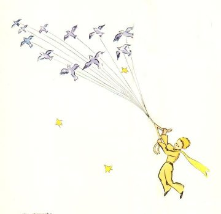
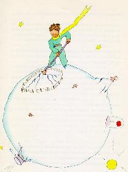

我想小王子大概是利用一群候鸟迁徙的机会跑出来的。在他出发的那天早上， 他把他的星球收拾得整整齐齐，把它上头的活火山打扫得干干净净。——他有两 个活火山，早上热早点很方便。他还有一座死火山，他也把它打扫干净。他想， 说不定它还会活动呢！打扫干净了，它们就可以慢慢地有规律地燃烧，而不会突 然爆发。火山爆发就象烟囱里的火焰一样。当然，在我们地球上我们人太小，不 能打扫火山，所以火山给我们带来很多很多麻烦。

小王子还把剩下的最后几颗猴面包树苗全拔了。他有点忧伤。他以为他再也 不会回来了。这天，这些家常活使他感到特别亲切。当他最后一次浇花时，准备 把她好好珍藏起来。他发觉自己要哭出来。

“再见了。”他对花儿说道。
可是花儿没有回答他。
“再见了。”他又说了一遍。
花儿咳嗽了一阵。但并不是由于感冒。
她终于对他说道：“过去我真傻。请你原谅我。希望你能幸福。” 花儿对他毫不抱怨，他感到很惊讶。他举着罩子，不知所措地伫立在那里。 他不明白她为什么会这样温柔恬静。

“的确，我爱你。”花儿对他说道：“但由于我的过错，你一点也没有理会。 这丝毫不重要。不过，你也和我一样的蠢。希望你今后能幸福。把罩子放在一边 吧，我用不着它了。”
“要是风来了怎么办？”
“我的感冒并不那么重……夜晚的凉风对我倒有好处。我是一朵花。”
“要是有虫子野兽呢？……”
“我要是想认识蝴蝶，经不起两三只尺蠖是不行的。据说这是很美的。不然 还有谁来看我呢？你就要到远处去了。至于说大动物，我并不怕，我有爪子。”
于是，她天真地显露出她那四根刺，随后又说道： “别这么磨蹭了。真烦人！你既然决定离开这儿，那么，快走吧！”
她这么说，是因为她怕小王子看到她掉眼泪。她是一朵多么骄傲的花儿呀……